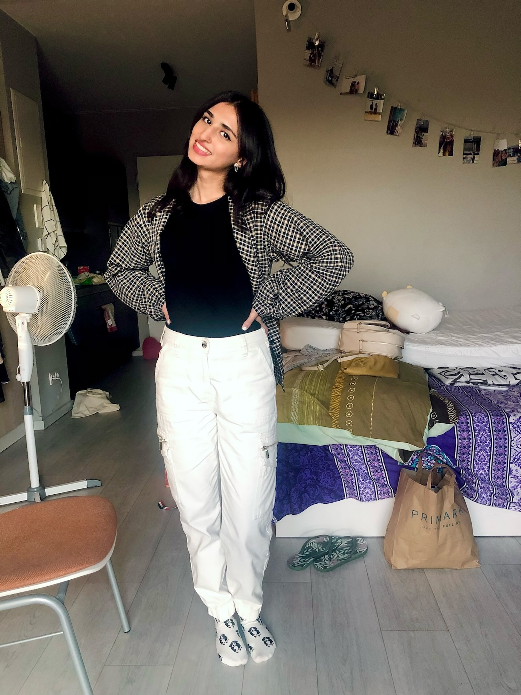

Blog
Hoi! Ik ben Romaisa, de persoon achter deze blog, gestart vanuit mijn interesse in duurzaamheid en gerecyclede fietsen. Ik bezocht Re_cycle voor een rondleiding en om mijn fiets te laten recyclen. Ze laten me ook zien hoe het eindresultaat eruit zal zien. Ik kijk ernaar uit om dit proces met jullie te delen. Veel leesplezier!
Start
Ik ging naar binnen met mijn fiets om deze te laten recyclen en sprak daar met een medewerker, Rob. Hij bevestigde dat ik mijn fiets kon recyclen en bood me een rondleiding aan. In het magazijn zag ik allerlei onderdelen, zowel oud als nieuw en gerecycled. Het zag er ongeveer zo uit:

Plan
Ik wilde mijn oude fiets graag laten recyclen. Deze fiets stond al een tijdje kapot in de schuur, maar ik vond het zonde om hem zomaar weg te gooien. Mijn plan was om de fiets te laten opknappen, zodat hij weer bruikbaar zou zijn. Zo zou de fiets een tweede leven krijgen in plaats van dat hij bij het afval belandt. Mijn fiets zag er zo uit:

Venieuwing
Daarna sprak ik met Rob, die uitlegde hoe de fiets zou worden opgeknapt. Hij merkte meteen op dat het zadel ontbrak, dus dat wordt vervangen. Ook komen er nieuwe wielen vanwege roest en worden de banden vernieuwd voor beter rijcomfort. Rob liet me een voorbeeld zien van het mogelijke eindresultaat, zoals hieronder afgebeeld.

Geslaagd!

Ik wil graag iemand anders blij maken met mijn fiets, dus ik hoef hem zelf niet meer. Het was interessant om te zien hoe alles duurzaam wordt aangepakt. Ik heb veel geleerd en zal zeker kapotte of ongebruikte fietsen hierheen brengen. Het is absoluut de moeite waard om een kijkje te nemen. Al met al een geslaagde dag!